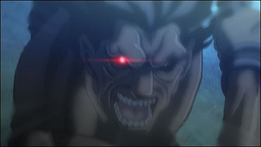

Берсеркер (яп. バーサーカー)

Настоящее имя — Геракл — знаменитый герой греческой мифологии. Его колоссальные физическая сила и выносливость подкрепляются Небесным Фантазмом «Божья Рука», который дает Берсеркеру дополнительно 12 жизней — по одной за каждый подвиг, совершенный им в течение своей жизни. Также этот Фантазм дает слуге защиту от любых повреждений низкого и среднего ранга и иммунитет к слабой магии. Слуги класса «берсеркер» обычно дики и неуправляемы, однако Геракл беспрекословно подчиняется своей маленькой хозяйке и во всём слушается её.
Назад к Гирою
Назад в миню Героев